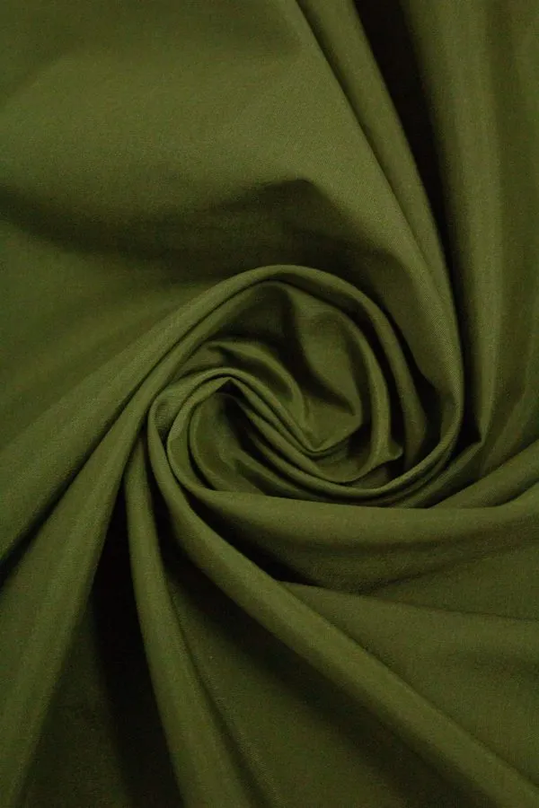
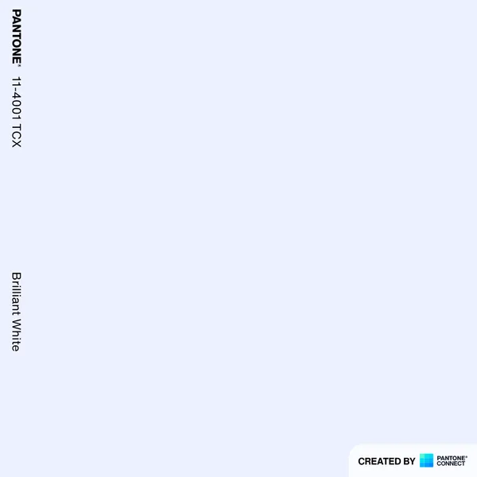
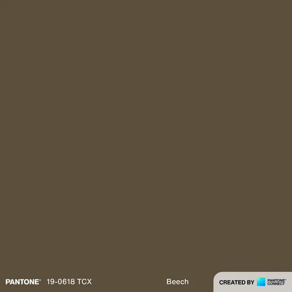
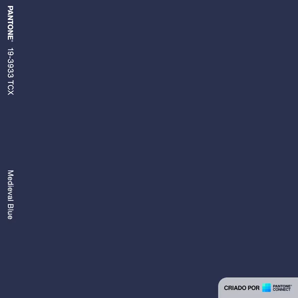
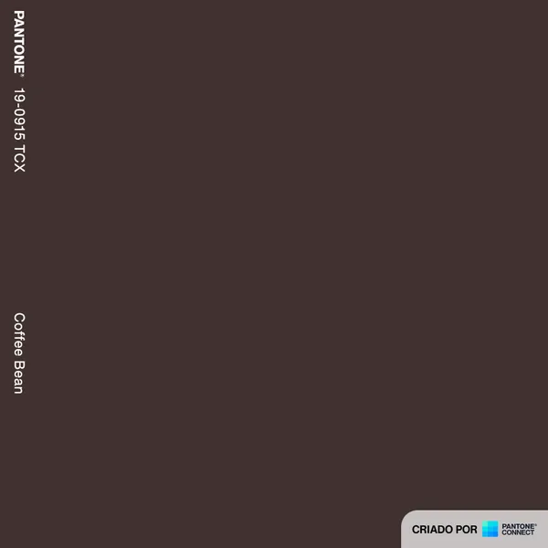

Fabric
Mac Ecotel PET

Mac Ecotel PET is a plain-weave fabric made of 100% PET polyester, 149 g/m² and 1.50 m wide, produced with recycled PET yarns. Suited for shorts, Bermuda shorts, shirts, sweatshirts, bags and accessories — available in 5 colors.
Code 22137
Mac Ecotel PET
- Composition
- Weight
- 149 g/m²
- Width
- 1.50 m
- Weave
- Plain weave
- Applications
- ShortsBermuda shortsShirtsSweatshirtsBagsAccessories
- Material
- Recycled PET
Available colors 5
-

0001 White Pantone 11-4001 TCX -

1356 Dark Moss Green Pantone 19-0618 TCx -

2694 Navy Blue Pantone 19-3933 TCX -

4174 Brown Pantone 19-0915 TCX -
 9999
Black
Pantone 19-4007 TCX
9999
Black
Pantone 19-4007 TCX
Care instructions
- Wash separately; in the first washes the garment may release residual dye.
- For garments combining colors, we recommend hand washing.
- Do not mix light and colored garments when washing.
- Avoid rubbing hard when hand washing the garment.
- Do not mix lightweight garments with heavyweight ones.
- Rinse the garments thoroughly with plenty of water.
- Wash at room temperature.
- Do not soak.
- Do not wring the fabric.


{kind=link}